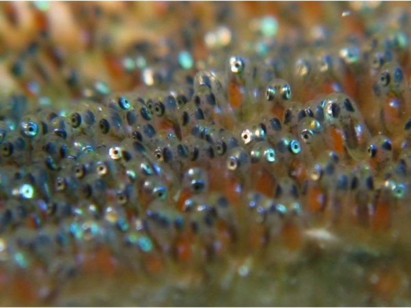

As we have explained before they are sequential hermafrodites, they all develop into males and only the largest of the group turns into the leading female and only breeding female with its only male partner. They are not polygamous, they only have one partner and they do not change it unless one of them dies. If you have bought a pair of them as juveniles, it is very likely that they will mate sooner or later after the female have fully developed. A smaller tank without any threats is more suitable to protect the fertilized eggs, even snails and shrimps will feast upon that "caviar"! So not even compatible tank mates should be kept. Changes in light setup and timing can also induce the female to lay eggs, and once layed, changes in light conditions can make them hatch faster!. They tend to lay the eggs on the anemone, if they host one, or in plain rocks or substratum, sometimes even in the aquarium glass! Both parents take care of the nest, you'll often see the male oxygenating and protecting their territory more than they used to. The tank should not have any substratum such as sand, only a few rocks or pipes to provide hideouts. Water filtration and airation is very important.
Once hatched, (about 200-500 per lay) the fry will eat the egg yolk for the first few days, when it is over, it's time to feed them! It is very time consuming, as you will have to provide newly hatched brine shrimps, copepods and Mysis shrimps, at least four times a day. Some pet shops offer newly hatched live food, but to be sure, it is better to breed these small crustaceans at home! It is rather easy, but you will need a specific tank only for these purpose. Brine shrimp alone will not be nutritious enough, be sure to feed the shrimp plenty of spirulina algae, variety is key! Not all the fry school will survive and it is normal (in nature is even worse). Once they have a few millimeters long, you can try to feed them with crushed dry food, if they accept it, you're in luck! Once they have grown almost half an inch and acquired all the characteristics of a clownfish (colour and form), it is advisable to remove the parents (or the newly bred fishes) to prevent any aggression, sometimes the parents might eat some of their own kindred, or fight them once they have a good size, to encourage them to move on their own territory, but inside the tank this will not be possible and aggressions might end up in grave injuries and dead fish. So better be careful! Water conditions must be pristine, so regular water changes is a must.
